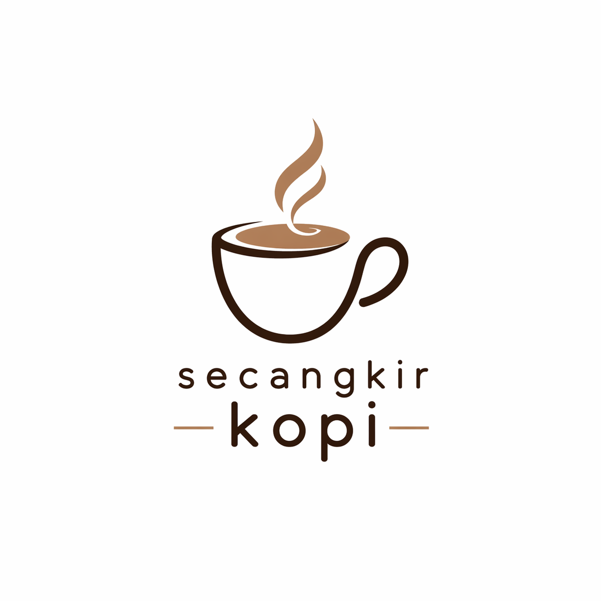
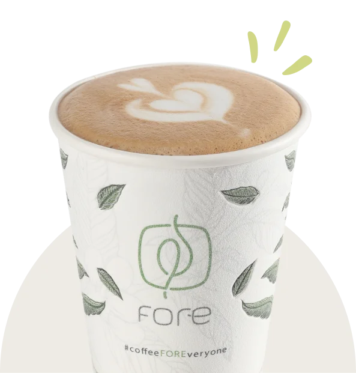
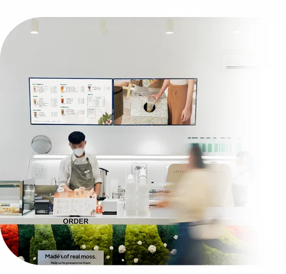

WELCOME TO CAFEDibuat dari biji kopi indonesia pilihan untuk pengalaman minum kopi terbaik setiap hari


Didirikan pada tahun 2000,CAFECOK hadir sebagai kafe yang berkomitmen menghadirkan kopi spesial berkualitas terbaik bagi para pelanggan. Terinspirasi dari semanagat pertumbuhan dan keberlanjutan, CAFECOK ingin terus berkembang dengan kuat, memberikan nilai positif, serta menciptakan suasana hidup disetiap komunitas yang kami layani
Didukung oleh pengalaman dan jaringan yang terus berkembang, CAFECOK memanfaatkan teknologi terkini dalam setiap proses penyajian kopi, mulai dari pemilihan peralatan hingga pemilihan biji kopi. Biji kopi kami dipilih langsung dari petani terbaik.